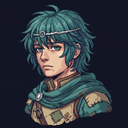

Steel Sword
Sword CMt 8Hit 85Crit 0Wt 8Rng 1Uses 30
vs Iron Sword: +3 Mt · −5 Hit · +3 Wt · AS 10 → 7
ArtsSunder −5 HP— empty slot
Companion to index.html (the cohesion pass). Same kit, same v2 palette. Every
frame is 844×390, an iPhone in landscape at 1×. The .d layer at the top of this
file is the proposed density change; it is a token edit, not a redesign. Portraits and node
icons are the real game assets.
Today: 52px node cards on a 64px row pitch, 104px lane pitch, stacked bottom-to-top inside a scroller. A 9-row act is 576px tall in a ~300px viewport, so the player sees 4–5 rows and scrolls to see where they are going. The phone is landscape; the act should run along the long axis.
B (recommended): horizontal graph. 9 act rows become 9 columns at a 76px pitch, 5 lanes at 56px. The whole act fits with no scrolling; node visual is 36px inside a 44px hit target. The right panel is the existing detail card, unchanged except for the Travel primary moving into it.
Keep the vertical scroller, drop node cards from 52→40px, row pitch 64→50, lane pitch
104→80. Shows 6 rows instead of 4–5. Two-line change in RouteGraph.js plus
three CSS values. Cheap, but the act still does not fit and the two hard-coded 64s (RouteGraph.js:35,42
and NodeMapMenu.js:173) still need one shared constant.
Either option: the 52px card background behind each icon goes. The icon is the node; a border ring carries state (done / here / available / locked).
Measured from the screenshot: header 15%, tabs 13%, footer 19%, content 53%. Proposal: title, tabs and Close share one 40px header row; the footer is deleted; content becomes ~80%. Everything "Advanced management" did moves into the tabs. The unit rail stays.

HP 20/20Sword BIron SwordSpeed Ring
HP 70Str 55Mag 15Skl 50Spd 60Lck 45Def 40Res 25
Adds what the canvas Stats tab had and the DOM one lost: tier, XP, effective combat numbers, growths (folded). Proficiencies collapse to one chip line. Skill cards leave this tab.
Weapons · 2/5
Items · 2/3
Accessory
Sword CMt 8Hit 85Crit 0Wt 8Rng 1Uses 30
vs Iron Sword: +3 Mt · −5 Hit · +3 Wt · AS 10 → 7
ArtsSunder −5 HP— empty slot
Rows are 50px and one line of stats each; the full card renders once, for the selected item. Give… replaces the two-column trade screen: pick a unit, item moves. Master Seal selected would show "Promote Edric → Great Lord" with a Use button, disabled with the reason until Lv 10. Reclass seals show the class list in the same pane. Forge suffixes and the weapon-art marker return from the canvas version.
Skills · 2/5
Allies within 2 tiles gain +10 Hit, +5 Avoid.
Strike first when attacked below half HP.
Weapon arts
−5 HP · +4 Mt, ignores half Def.
Team scrolls · 3
Wrath: +20 Crit below half HP.
Sol: heal half of damage dealt.
Lance art · Steel Lance, Iron Lance eligible on Sera.
The scroll shelf is team-owned (runManager.scrolls) so it lives beside the unit's
skills, not inside a unit's bag. "Teach Edric" is one tap for the selected unit; "Teach…"
opens the unit picker. Weapon-art scrolls bind to a weapon and slot (3 max) and confirm before
overwriting an innate art, same rules as the canvas path.
UnitPicker: title, unit rows with portrait / class / one-line reason / count,
optional Convoy row, Cancel. Used by: Give (roster), Teach… (scrolls), Promote target class
(rows are classes instead of units), reward give-to, reward stat booster, whetstone unit and
weapon steps, convoy withdraw-to. One component, one set of gamepad and keyboard rules, one
e2e test.
Today MobileRewards is a DOM list that hides itself and fires a synthetic pointer
event at a canvas card; from that point the player is on the 640×480 canvas for give-to,
consumable, stat-booster, whetstone, forge-stat and imbue pickers. The proposal is one sheet
with a step stack: the left column is what you are choosing, the right column is where it is
going.
Sword CMt 9Hit 75Crit 5Wt 9Rng 1
Reverses the weapon triangle: strong against lances, weak against axes.
Can use:EdricRowanSera needs Sword
Lancereaver›Give to
Same UnitPicker as 2d, rendered inline instead of modal because the sheet already
owns the screen. The left list stays visible and dimmed so the player keeps context; Back
returns to 3a without re-rolling. The one extra piece of information the canvas never showed:
what the item does to the recipient's attack speed.
Silver Whetstone›Edric›Weapon
Steel Sword›Choose a stat
Three canvas screens (unit → weapon → stat / imbue) become one breadcrumb. Imbue stones swap the stat list for the imbue list. Units with no forgeable weapon are shown disabled with the reason, not hidden, so the "No forgeable weapons in roster" dead end is visible before the tap.